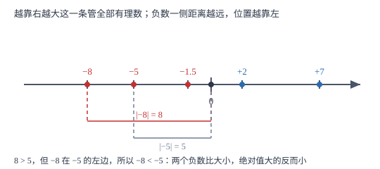

有理数的大小比较
比较大小只用一条主线：正数大于 0 大于负数；同号内部再比绝对值，负数要反着判——「绝对值大的反而小」是全章最容易翻车的一步。
| 所属主题 | 有理数 |
|---|---|
| 所属模块 | 代数 |
| 课标学段 | 第四学段（7~9 年级） |
| 前置知识 | 数轴、相反数与绝对值、有理数的概念与分类 |
| 核心素养 | 抽象能力推理能力 |
教材定位
人民教育出版社《人教版（2024版）义务教育教科书·数学》
七年级上册第1章 有理数1.2 有理数及其大小比较
对应七上 1.2 中「有理数的大小比较」课时。教材给出法则与数轴两种方法；本篇补上作差法，并把它与后续不等式的比较方法接起来。
说明
有理数比较大小有两条基本依据。第一条按正负分层：任何正数都大于 0，任何负数都小于 0，所以正数大于一切负数，0 大于一切负数。第二条管同号内部：两个正数比大小，绝对值大的那个大；两个负数比大小，绝对值大的那个反而小。后一条与前一条方向相反，是因为负数在原点左侧，绝对值越大离原点越远，位置越靠左，而越靠左数值越小。
具体操作有三条路径。数轴法最直观：把数都摆到同一条数轴上，从左到右读一遍就是从小到大。法则法最快：先分层再看绝对值，一次判完。作差法最通用：要比较 a 与 b，就算 a-b，结果为正说明 a>b，为零说明相等，为负说明 a<b。三种方法结论必须一致，做题时用其中一种算、用另一种验，错误当场就能发现。
使用场景
温度比较是最常见的原型：-18 ℃、-5 ℃、-12 ℃ 中，-18 ℃ 最冷，因为它的绝对值最大而数值最小。成绩与排名同理，但要看清题目问的是「分数高低」还是「名次先后」——分数低的反而名次靠后，两者方向一致；若换成「失分多少」「亏损多少」，问的就是绝对值的意义了。
财务上比较几个月的盈亏时，要区分「数最小」与「亏最多」：-1.2 万元的数值比 -0.8 万元小，而它的亏损额更大。凡是题目出现「最多」「最少」「最冷」「最深」这类词，先判断问的是数值还是绝对值，再动笔。
注意点
两个负数比较大小时，比较完绝对值必须把结论反过来。|-8|=8、|-5|=5，8>5，所以 -8<-5。若中途忘了反向，就会得到完全相反的答案，这是本章失分最多的一处。
形式不统一不能直接比。分数与小数混合时，先统一成同一形式：3/4 与 0.7 比较，把 3/4 化为 0.75 再比；带分数与假分数混合时，先把带分数化成假分数或小数。统一之后再走分层与绝对值两条依据。
「a 的绝对值大」与「a 大」不是同一件事。只有在 a、b 都为正数时，两者方向才一致；都为负数时方向相反；一正一负时不必比绝对值，直接按正负分层定结论。
证明

图 1：越靠右越大这一条管全部有理数；负数那一侧距离越远（绝对值越大），位置越靠左，数值反而越小
证明
结论 1两个负数比较，绝对值大的那个反而小。
设 a、b 都是负数且 a<b，在数轴上 a 在 b 的左边（比如 -5 在 -2 左边）。取相反数相当于把点关于原点翻折：a、b 都翻到原点右侧，左右顺序跟着反过来，-a 落在 -b 的右边。负数的绝对值等于它的相反数，所以 |a|=-a、|b|=-b；-a、-b 都是正数，右边的数更大，故 |a|>|b|。也就是说，a 更小的时候它的绝对值更大，反过来即：绝对值大的负数更小。
关键一步依据是「负数取绝对值等于取相反数」加上「取相反数就是关于原点翻折、左右顺序反转」，只用数轴与相反数就够了，不需要后面才学的不等式性质。
结论 2作差法成立：a-b>0 与 a>b 互为充要条件。
在数轴上，a-b 表示从 b 走到 a 的位移。若 a 在 b 右侧，这段位移朝正方向，a-b>0；若 a 在 b 左侧，位移朝负方向，a-b<0；若两点重合，位移为 0。数轴上只有这三种位置关系，所以 a-b 的符号与 a、b 的大小关系一一对应。
关键一步依据是数轴上「位置关系」与「位移方向」的对应：右大左小这条规则翻译成代数，就是差的正负。
结论 3正数大于一切负数，不需要比较绝对值。
正数在原点右侧，负数在原点左侧，而数轴上右边的数总比左边的大，所以任意正数都在任意负数的右边，正数必然大于负数。这个过程只用到位置，与两个数的绝对值大小无关：0.001 也大于 -1000。
关键一步依据是正负分层：符号先决定在哪一侧，位置再决定谁大；分层一次判完，可以跳过绝对值的比较。
动手实验
裁六张纸条，分别写上 -8、-5、-1.5、0、2、7，打乱后贴在一条画好刻度的数轴上，再从左到右读一遍，得到 -8<-5<-1.5<0<2<7。接着用尺子量 -8 与 -5 到原点的距离：前者 8 格、后者 5 格，距离更长的那个位置更靠左，数值更小——「绝对值大的反而小」用手量一遍就记住了。
解题思路
比较两个有理数，按四步走。第一步定符号：一正一负直接得结论，正数大；有 0 参与时，正数大于 0、0 大于负数。第二步同为正数：比绝对值，绝对值大的大。第三步同为负数：比绝对值，再反过来说——绝对值大的反而小。第四步复核：把两个数点在草稿数轴上，确认左右位置与刚才的结论一致。
遇到分数、小数、带分数混在一起，先统一形式再走上面四步。遇到三个以上的数排序，不要两两乱比，改用数轴法：全部点到同一条数轴上，从左到右抄下来即得从小到大的顺序，一次成型且不容易漏。题目问「最大」「最小」时，排序后取两端即可。
按场景的例题
例 1（场景：物理情境） 三地同日最低气温
某日三地最低气温分别为 -18 ℃、-5 ℃、-12 ℃。把这三个温度从小到大排列，并指出哪里最冷。
解：三个数都是负数，按「绝对值大的反而小」处理。绝对值分别是 18、5、12，从大到小为 18>12>5，反过来说数值从大到小就是 -5>-12>-18。所以从小到大排列是 -18<-12<-5。最冷的是数值最小的 -18 ℃，它的绝对值最大、离 0 ℃ 最远。
答：-18\ ℃<-12\ ℃<-5\ ℃，其中 -18 ℃ 最冷。
例 2（场景：销售与利润） 一个季度的盈亏对比
某门店 7 月至 9 月的盈亏（盈利为正，单位万元）分别为 -1.2、-0.8、+0.5。把三个月按盈亏数值从小到大排列，并回答哪个月亏损最多、亏损多少。
解：先分层：+0.5 是正数，最大；-1.2 与 -0.8 是负数，都在 0 以下。两个负数比绝对值：|-1.2|=1.2、|-0.8|=0.8，1.2>0.8，所以 -1.2<-0.8。合起来从小到大为 -1.2<-0.8<+0.5。亏损最多问的是亏损额，即绝对值的最大者：|-1.2|=1.2，7 月亏损 1.2 万元。注意「数值最小」与「亏损最多」在这里指向同一个月，但理由不同：前者比数值，后者比绝对值。
答：-1.2<-0.8<+0.5；7 月亏损最多，亏损 1.2 万元。
例 3（场景：竞技与游戏） 小组赛净胜分排名
四支队伍小组赛净胜分分别为 -8、+7、-3、+2。按净胜分从高到低排名次。
解：先分两层：正数有 +7、+2，负数有 -8、-3，正数整体高于负数。正数内部比绝对值：7>2，所以 +7>+2。负数内部比绝对值再反向：|-8|=8>|-3|=3，所以 -8<-3。合起来从高到低为 +7>+2>-3>-8。净胜分为负说明失分多于得分，-8 的队伍净输 8 分，排在最后。
答：+7>+2>-3>-8，名次依次为一、二、三、四。
常用推论
若 a>b，则 -a<-b：两边同时取相反数，大小关系反向。这条结论是「负数比较要反向」的另一种说法。
有理数没有最小的正数，也没有最大的负数：任意正数除以 2 仍更小，任意负数乘以 2 仍更小。但正整数有最小值 1，负整数有最大值 -1。
作差法是通用判别法，对一切有理数都有效，不依赖正负分层；分数、小数混合比较时，作差往往比通分更省事。
同号两数比较时，「绝对值大」与「数值大」的关系由符号决定：同为正数则同向，同为负数则反向。
易错点
错认为 -8>-5，理由是 8>5。
为什么错把正数的比较规则直接搬到负数上，忘了负数在原点左侧，绝对值越大位置越靠左。
正确|-8|=8>5=|-5|，两个负数绝对值大的反而小，所以 -8<-5。可在数轴上点出两点，-8 在 -5 左边，结论立刻可见。
错题目问「亏损最多」，回答成数值最大的那个月。
为什么错把「最多」理解为数值大，而亏损额对应的是绝对值，数值越小的亏损越大。
正确亏损额看绝对值：-1.2 的绝对值是 1.2，-0.8 是 0.8，所以 -1.2 亏损更多。判断前先看题目问的是「数值」还是「多少」。
错认为 -3/4>-0.7，理由是 3/4>0.7。
为什么错形式没有统一，先按正数比较得出了「四分之三大」，再直接套到负数上，忘了要反向。
正确先统一形式：-3/4=-0.75。再比绝对值：|-0.75|=0.75>0.7=|-0.7|，所以 -3/4<-0.7。
直观理解
把数轴想成一栋楼的地下与地上：地上一层往上数越大，地下负一层、负二层越往下越小。负八层比负五层更深、更靠下，所以更小；但它的「深度」比负五层大。这就是「绝对值大反而小」——深度大、位置低。比较大小看位置，比较深浅看绝对值，两个问题分开问。